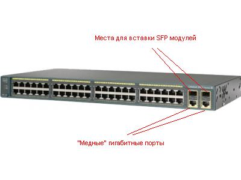
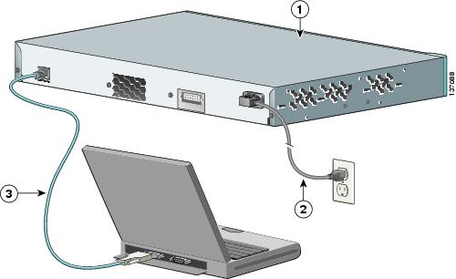
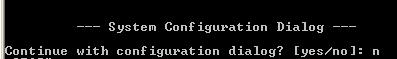

Первоначальная настройка коммутатора Cisco.
December 18, 2009
В этой статье будет рассказано, про то как “запустить” свежекупленный коммутатор Cisco Catalyst 2960/3560/3750. В принципе, данные настройки применимы для всех коммутаторов cisco, данные серии коммутаторов указаны, более, для определенности.
Итак, у нас есть коммутатор Cisco Catalyst 2960 или 3560 или 3750. Внешне он будет выглядеть примерно так как на рис. 1.

На рис. 1 Перед нами “48″ портовый коммутатор который, если быть точным, обозначается как Catalyst 2960-48TC-S.
У него 48 портов 10/100 Ethernet мегабит в сек. (то есть портов которые могут работать как и на 10 мегабит в сек, так и на 100 мегабит сек в зависимости от того сколько мегабит в сек устройство к нему подключено на данный конкретный порт.) Кроме этих 48 портов, в нем дополнительно есть еще два порта 10/100/1000 ( т.е. могущие работать и на 10 и на 100 и на 1000 ) и есть еще два места (слота) куда могут быть установлены так называемые модули SFP. SFP модули бывают и оптические, таким образом покупка за отдельную плату SFP модулей
и их установка в эти слоты позволит нам сделать так, чтоб наш коммутатор можно будет подключить по оптике к другим устройствам. Итого в данном коммутаторе есть 50 портов. То есть можно подключить к нему 50 устройств, 50 – не смотря на то, что есть 52 “дырочки”, так как одновременно работать SFP и медный “гигабитный” порт ПОД НИМ не могут. SFP слева и медный гигабитный справа – могут, но вот SFP “сверху” и “медный” порт под ним не могут.
Если посмотреть сзади (1) на этот коммутатор, то можно обнаружить еще две дырочки. Одна для подключения кабеля питания 220 вольт (2), вторая, похожая на порт к которому можно подключить ETHERNET , но которая таковым не является с надписью CONSOLE (3). Этот порт будет использоваться нами для первоначальной настройки коммутатора.
Внизу на рис. 2 представлен вид этого коммутатора сзади.

Берем голубой кабель который идет в комплекте с коммутатором. И подключаем его к COM порт компьютера. Запускаем программу HyperTerminal на компьютере. Выбираем COM порт к которому подключен коммутатор (обычно COM1), устанавливаем скорость передачи данных 9600 и включаем коммутатор.
При первом запуске коммутатора Cisco Catalyst, так как в нем нет никакой записанной конфигурации он запускает программу setup, которая посредством задания вам множества вопросов на английском языке, вроде бы сама пытается все настроить. Но имхо, этот setup только запутывает все, так что если вы увидите на экране такое:

То лучше сказать “n”, прервать тем самым setup, а потом самому настроить коммутатор с нуля. Тем более это очень просто.
Не бойтесь тут нажимать на что-то – вы ничего не сипортите. Жмите смело “n” и Enter потом.
После чего вы должны увидеть такое :
switch>
Это есть командный режим управления Коммутаторм Cisco. Дальше будем настраивать.
Первым делом нам нужно перейти в так называемый “привилегированный режим”, по сути это режим в котором можно конфигурировать, в отличии от того в котором мы находимся по умолчанию и имеем ограниченные воз0можности по управлению коммутатором. ” Привилегированный режим” это что-то вроде root режима в юникс и входа на windows пол админом. Переход в этот привелигированный режим производится просто – пишем enable и вводим пароль. Пароль по умолчанию на оборудовании cisco это либо “cisco”, либо “Cisco”, либо просто жмем enter не вводя ничего
switch>enable
Password:
switch#
То что у нас изменилось приглашение на ввод и стало таким “switch#” говорит о том, что мы как раз вошли в тот самый привилегированный режим.
Конфигурируем дальше. Нам, по идее, для первоначальной настройки необходимо просто настроить чтоб до коммутатора можно было попасть через телнет. Для этого на Cisco нужно сделать следующее
Задать ip адрес
Настроить параметры входа (в терминах cisco это настроить VTY, задать логин и пароль)
IP адрес для коммутатора cisco обычно задается заданием его на, так называемый, интерфейс VLAN 1. (Так как коммутатор, по идее, сам не обязательно должен иметь ip адрес для того чтоб выполнять свои функции, то ip адрес для его работы и не нужен. Он нужен только для управления им. А так как нет “физических” интерфейсов (портов) с IP адресами на коммутаторе, то такой адрес и задается виртуальному интерфейсу – который и является интерфейс VLAN 1 ).
Для того чтоб настраивать коммутатор Cisco нужно перейти в режим конфигурирования. Делает это заданием команды “configuration terminal”, что обозначает – ” настраиваем с терминала”. Задавать такую длинную команду лень. Мы и не будем. Дело в том, что cisco может сам по начальным буквам слова определять нужную команду (если введенные буквы неоднозначно определяют команду, то cisco его не выполнит, а предупредит об этом). Так что нам достаточно задать “conf t”
switch# conf t
switch(config)#
switch(config)# – обозначает, что мы перешли в режим конфигурирования.
задаем ip адрес:
switch(config)#interface vlan 1 (входим в режим конфигурирования интерфеса VLAN 1)
switch(config-if)#ip address 10.1.1.1 255.255.255.0 (задаем выбранный нами ip)
switch(config-if)#no shutdown (эта команды включает интерфейс, по умолчанию он может быть выключен)
switch(config-if)exit (выходим из режима конфигурирования интерфейса)
switch(config)#exit (выходим из режима конфигурирования )
switch#
Далее нам нужно задать пароль на вход в привилегированный режим
switch# conf t
switch(config)# enable secret пароль_на_вход_в привилегированный режим
switch(config)# exit
switch#
Настраиваем параметры входа
switch# conf t
switch(config)# line VTY 0 4
switch(config-line)# login
switch(config-line)#password пароль_на_вход
switch(config-line)#exit
switch(config)#exit
switch#
Все. Первый сеанс настройки коммутатора Cisco почти завершен. Осталось только сохранить сделанную конфигурацию. Делается это командой “write mem”
switch# write mem
Building configuration
OK
switch#
Сохранились. Можно выдергивать консольный кабель, подключать к коммутатору компы и заходить, при необходимости, на данный коммутатор далее по телнет. При этом, для управления этим коммутатором нам нужно будет знать два пароля – “пароль_на_вход” и “пароль_на_вход_в привилегированный режим”. Запомните их.
Для быстрого конфигурирования коммутора можно сделать следующее:
Скопировать текст ниже в текстовый редактор, задать в нем ip адрес и пароли свои и просто вставить полученный текст (опция “передать главному компьютеру” в hyperterminal по клику правой мыши).
conf t
interface vlan 1
ip address 10.1.1.1 255.255.255.0
no shutdown
exit
enable secret пароль_на_вход_в привилегированный режим
line VTY 0 4
login
password пароль_на_вход
exit
write mem
exit
|
Знаете ли вы, что: Крутить настройки Cisco - это занятие коллективов профессионалов, которые называются системными интеграторами. Системный интегратор CTI настроит вам и Cisco и другое сетевое оборудование за кратчайшие сроки по сходной цене. |